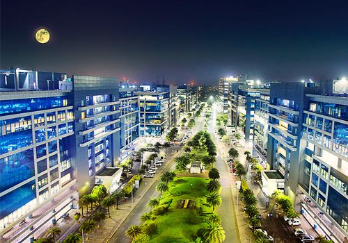

Top IT Parks Of Pune
Most popular and most gigantic IT Park
you can find in Pune is Hinjawadi IT Park and ......
you can find in Pune is Hinjawadi IT Park and ......
Rajiv Gandhi Infotech Park
rajiv gandhi infotech park in pune:
Rajiv Gandhi Infotech Park is one of the most significant employment centres in Pune, situated in the locality of Hinjewadi. The Infotech Park is spread across Hinjewadi Phase 1, 2 & 3 and consists of several business parks and corporate campuses having offices of major IT/ITeS entities, along with some automotive and biotechnology companies.
Cybercity Magarpatta IT Park
Magarpatta is one of the top it parks in Pune. It is a 450-acre area, near the Hadapsar, Pune. This place is easily connected to all prime locations through public transport. The very famous malls Seasons mall and Amanora mall are very close to magarpatta city.
This Place is a beautiful and pollution-free city to live a hassle-free life.
EON IT Park
Eon It park is a very big IT hub in the kharadi area as well as in Pune. there are lots of companies in Eon It park Kharadi. In this article, I will provide some details about those companies. and if you want to add some details about kharadi Pune then kindly contact us on the above email address priyakadam972@gmail.com.
SP Infocity IT Park
SP Infocity as a brand stands for solid construction that’s sustainable and green. With efficiently designed and laid out floor plates that can cater to a broad range of space requirements, SP Infocity Pune gives businesses the convenience of expanding under a single umbrella. The project is designed as per globally recognised environmental efficiency standards that reduce operating costs.
ICC Tech
ICC Tech Park spans across ~ 400,000 sq. ft. of area and has two independent corporate towers for the IT and ITeS sector. The multi-tenanted tower combines corporate spaces with highstreet retail & fine dining destinations.
Some of the leading software technology giants occupy the workspaces across the two towers at ICC
Tech Park.
Cerebrum IT Park
ICC Tech Park spans across ~ 400,000 sq. ft. of area and has two independent corporate towers for the IT and ITeS sector. The multi-tenanted tower combines corporate spaces with highstreet retail & fine dining destinations.
Some of the leading software technology giants occupy the workspaces across the two towers at ICC
Tech Park
Weikfield IT Park
Weikfield IT Park is an eminent, high quality office park located in central Pune. Directly opposite the 300-key Hyatt Regency and adjacent to the 220-key Novotel hotel, the business park is three kilometres from Pune International Airport and six kilometres from Pune railway station.
World Trade Center Pune
An integrated business park, WTC Pune is an institution for global business and growth. Located strategically in Kharadi, it fosters international trade by providing world-class facilities and robust infrastructure, designed specifically to meet the needs of participants in global commerce.
Business Bay
Business Bay is a place built for mixed-use purposes, and it acquires 1,600,000 sq. ft. area, where many corporate houses, software majors, and IT-enabled services companies are available.
Business Bay is a perfect example of modern workspaces and luxurious hospitality,business bay is developed by the panchshil.
Business Bay deservedly recognized at the prestigious Asia Pacific Property Awards 2014-2015 as Highly Commended Mixed-Use Development
Commerzone IT Park
Commerzone Yerwada is strategically located in eastern part of Pune. It is in proximity to the railway station, Pune International Airport and the upcoming metro station. It offers enriched business spaces and is a sough after office address for those wanting to optimize on work-life integration.
